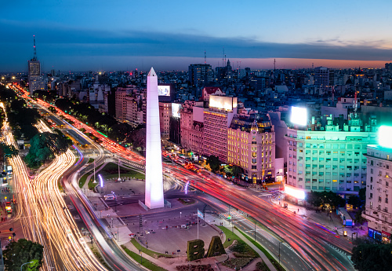
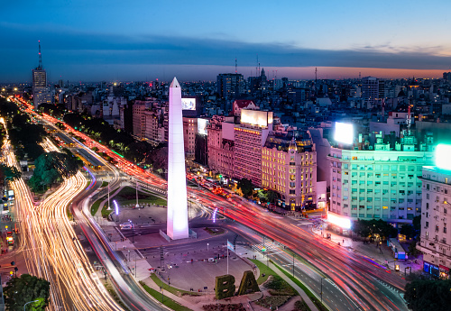

4 Days and 3 Nights Getaway
Price starts at €2,900 per person (excluding flights)
● Day 1
- 12:00PM – Arrival at Ezeiza Airport, private transfer to hotel
- 3:00PM – Coffee at Café Tortoni & check-in stroll through Microcentro
- 7:30PM – Welcome dinner and tango show in San Telmo
● Day 2
- 9:00AM – Guided city tour (Recoleta, Palermo, and La Boca)
- 1:00PM – Lunch at a traditional parrilla
- 3:00PM – Visit Recoleta Cemetery & Eva Perón’s tomb
- 6:00PM – Wine tasting at a local cellar
● Day 3
- 10:00AM – Bike tour through the ecological reserve & Puerto Madero
- 1:00PM – Street food lunch at Mercado de San Telmo
- 4:00PM – Optional tango class or leather shopping in Palermo
- 8:00PM – Rooftop dinner at Palacio Barolo
● Day 4
- 9:00AM – Brunch in Palermo Soho
- 11:00AM – Visit to Museo de Arte Latinoamericano (MALBA)
- 1:00PM – Farewell empanadas & airport transfer

 
